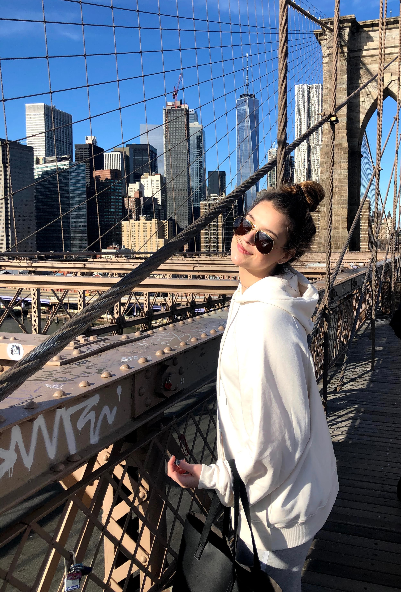
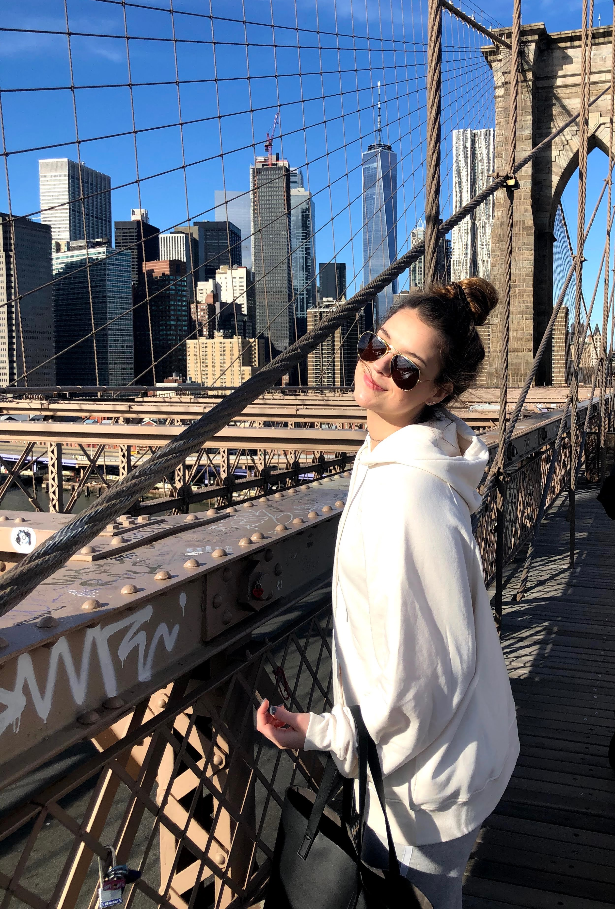
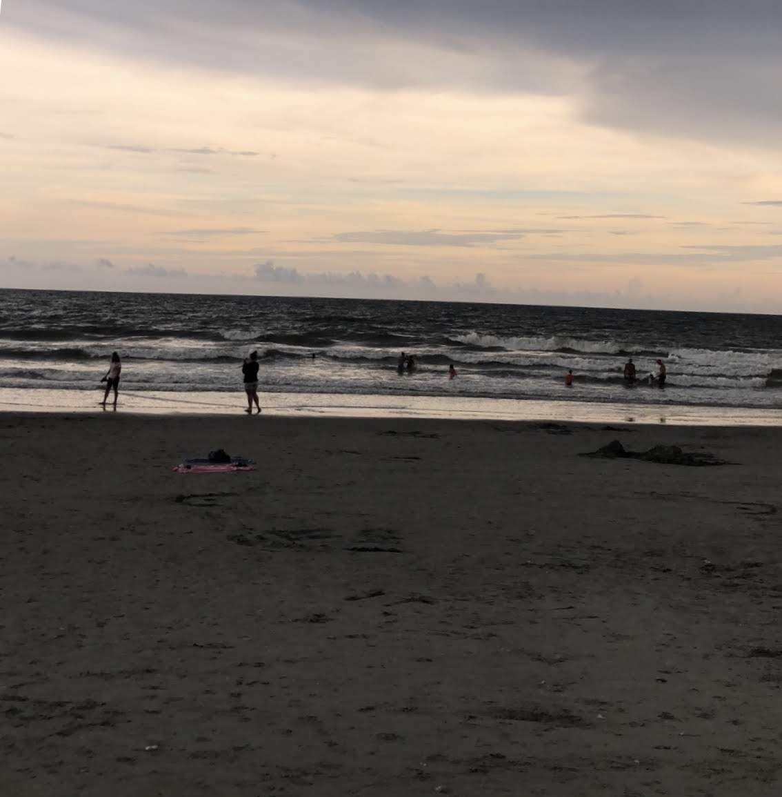
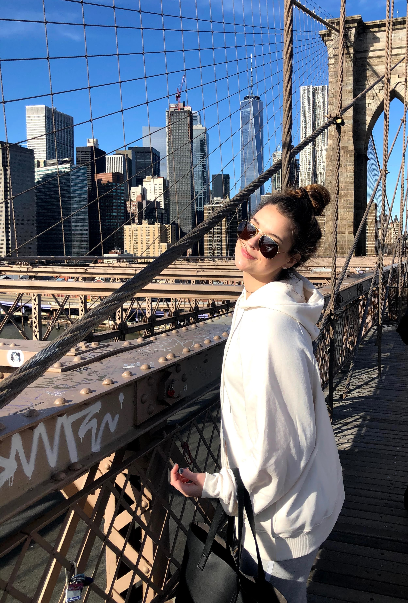
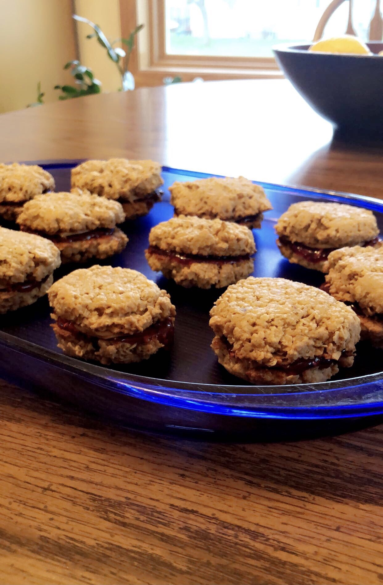
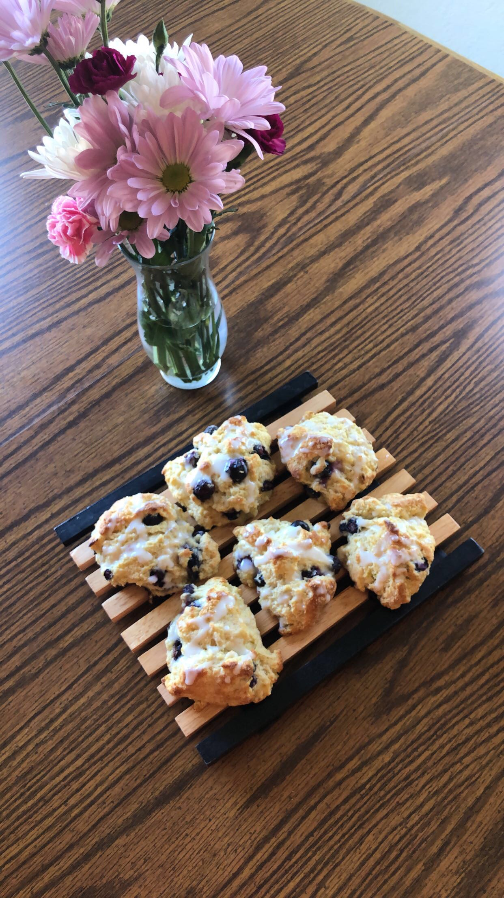
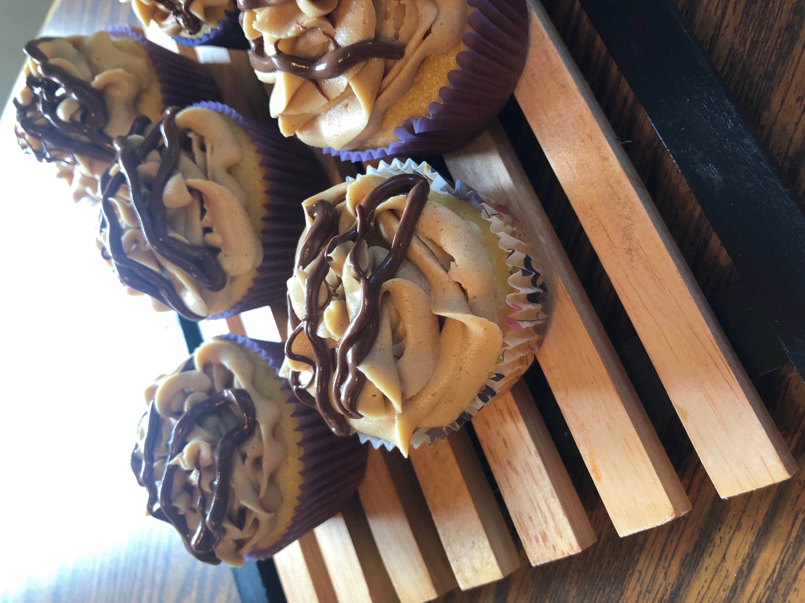
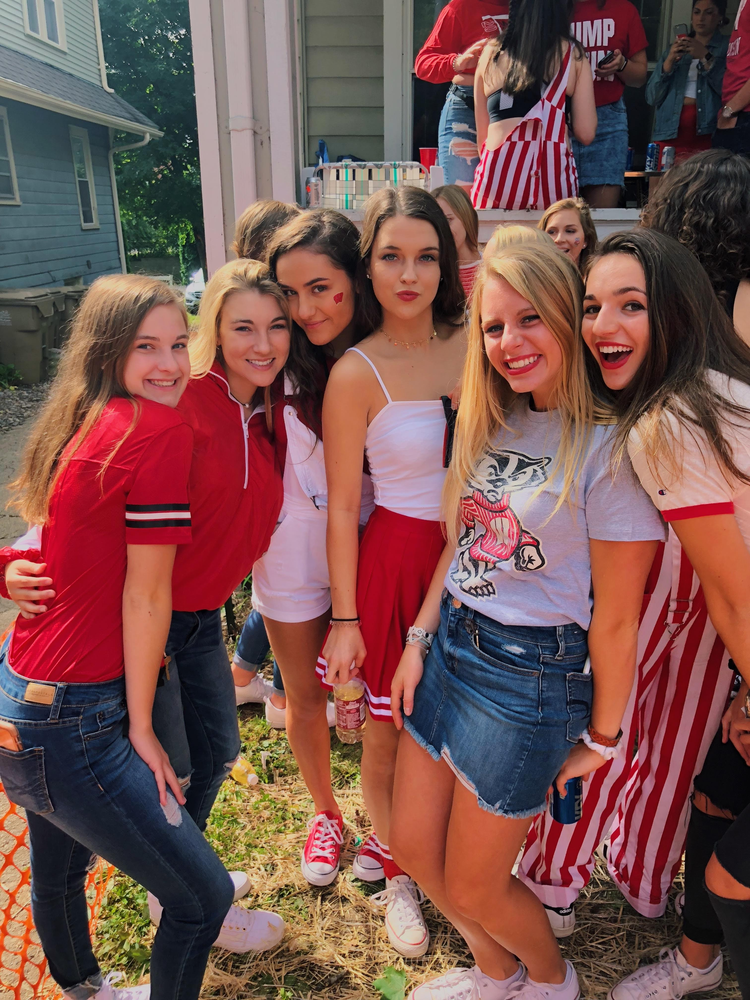

I love traveling to places with beaches and mountains, as well as exploring the city!


I have loved to bake ever since I was young, but recently some of my favorite things to make have been PB&J cookies, scones, and cupcakes!
  
Finally, both playing and watching sports has always been a significant part of my life, and something I love to do! I am a big fan of the Badgers (obviously!) and the Packers as well!
